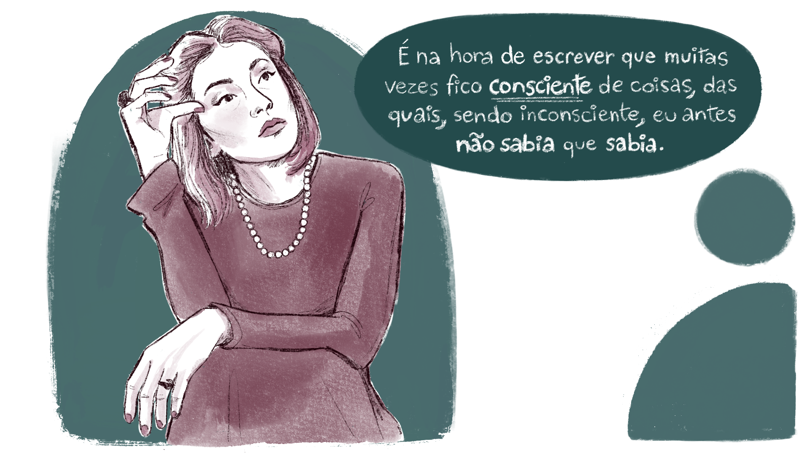
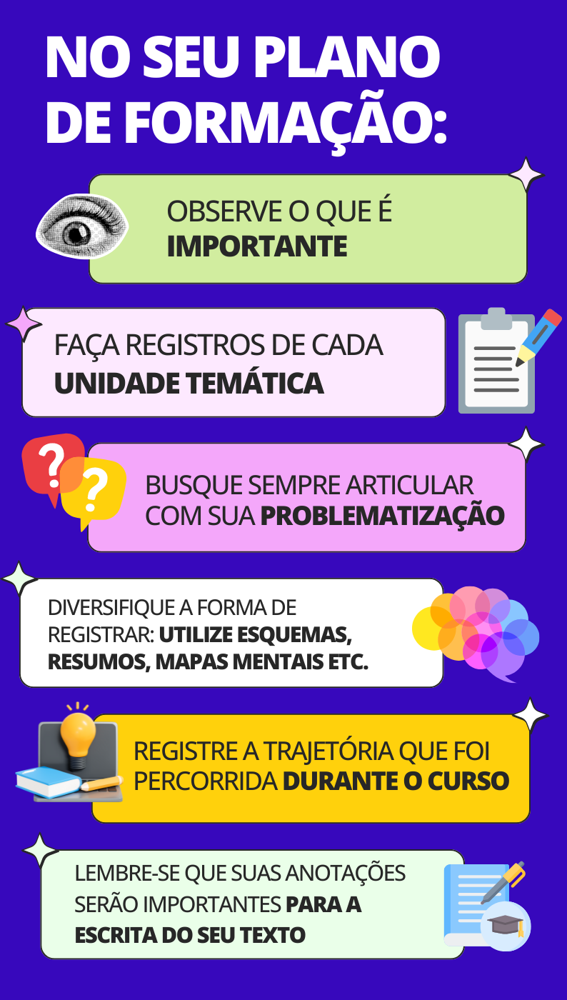

Construindo o seu Relatório de Formação
O Relatório de Formação objetiva refletir sobre o percurso formativo que se trilha em paralelo ao conjunto de atividades realizadas tanto no curso quanto no desenvolvimento das suas atividades profissionais e pretende registrar o percurso de cada um com suas experiências, histórias e memórias no decorrer do tempo deste curso de formação. Bruner (2001) nos lembra que
Vivemos em um mar de histórias, e como os peixes que (de acordo com o provérbio) são os últimos a enxergar a água, temos nossas próprias dificuldades em compreender o que significa nadar em histórias. Não que não tenhamos competência em criar nossos relatos narrativos da realidade – longe disso, somos, isso sim, demasiadamente versados. Nosso problema, ao contrário, é tomar consciência do que fazemos facilmente de forma automática.
Assim, o Relatório de Formação, para além de uma forma de registro de vivências, experiências, memórias e reflexões, tem como objetivo trazer à consciência o que se pensa e o que se sente em relação aos desafios cotidianos, para produzir e difundir, a partir dessa conscientização sobre a realidade, novos conhecimentos que auxiliem na transformação das situações que nos desafiam.
Clarice Lispector, ao afirmar que “é na hora de escrever que muitas vezes fico consciente de coisas, das quais, sendo inconsciente, eu antes não sabia que sabia”, nos faz lembrar de que o exercício da escrita nos torna mais conscientes sobre o nosso cotidiano. Por isso, os educadores precisam escrever: para tomar consciência do quanto sabem, para tomar consciência desse saber e desenvolvê-lo. Assim, podemos também perceber o quanto ainda não sabemos e o que podemos e queremos aprender.

Título: Clarice Lispector e o registro através da escrita
Fonte: Lispector (1999).
Elaboração: Prosa (2024i).
Cabe a você organizar as sínteses e as indagações, de forma a poder, ao final do curso, escrever quais atividades foram realizadas, que dados apareceram em seus estudos e como as aulas, os debates e as leituras contribuem no desenvolvimento do seu Plano de Formação.

Título: A importância dos registros de sua trajetória
Fonte: Prosa (2024j).